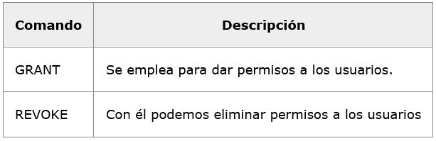
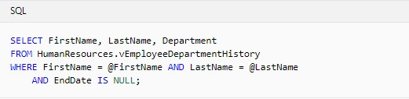

1. Uso de LDD, LMD y LCD
LENGUAJE DE DEFINICION DE DATOS(LDD):
El lenguaje de definición de datos (en inglés Data Definition Language, o DDL), es el que se encarga de la modificación de la estructura de los objetos de la base de datos.
El SGBD posee un compilador de LDD cuya función consiste en procesar las sentencias del lenguaje para identificar las descripciones de los distintos elementos de los esquemas y almacenar la descripción del esquema en el catálogo o diccionario de datos.Existen cuatro operaciones básicas:
CREATE
ALTER
DROP
TRUNCATE
LENGUAJE DE MANIPULACION DE DATOS(LMD):
Una vez creados los esquemas de la base de datos, los usuarios necesitan un lenguaje que les permita manipular los datos de la base de datos: realizar consultas, inserciones, eliminaciones y modificaciones. Este lenguaje es el que se denomina (LMD).
LMD: Un lenguaje de manipulación de datos (Data Manipulation Language, o DML en inglés) es un lenguaje proporcionado por el sistema de gestión de base de datos que permite a los usuarios llevar a cabo las tareas de consulta o manipulación de los datos, organizados por el modelo de datos adecuado.
INSERT
UPDATE
DELETE
LENGUAJE DE CONTROL DE DATOS(LCD):
Consiste en garantizar que sólo los usuarios autorizados puedan efectuar operaciones correctas sobre la Base de Datos para ello se dispone de 2 tipos.
- Control sobre la base de datos
- Control sobre las tablas
Data Control Language, en español: Lenguaje de Control de Datos.
Este tipo de comandos se encargan de la seguridad de nuestros datos y el control de usuarios.

2. Realizar de manera práctica procedimientos almacenados
Un procedimiento almacenado de SQL Server es un grupo de una o varias instrucciones Transact-SQL o una referencia a un método de Common Runtime Language (CLR) de Microsoft .NET Framework. Los procedimientos se asemejan a las construcciones de otros lenguajes de programación, porque pueden:
• Aceptar parámetros de entrada y devolver varios valores en forma de parámetros de salida al programa que realiza la llamada.
• Contener instrucciones de programación que realicen operaciones en la base de datos. Entre otras, pueden contener llamadas a otros procedimientos.
• Devolver un valor de estado a un programa que realiza una llamada para indicar si la operación se ha realizado correctamente o se han producido errores, y el motivo de estos

Microsoft. (2017). Access SQL: conceptos básicos, vocabulario y sintaxis. 25-04-2019, de Microsoft Sitio web: https://support.office.com/es-es/article/access-sql-conceptos-b%C3%A1sicos-vocabulario-y-sintaxis-444d0303-cde1-424e-9a74-e8dc3e460671